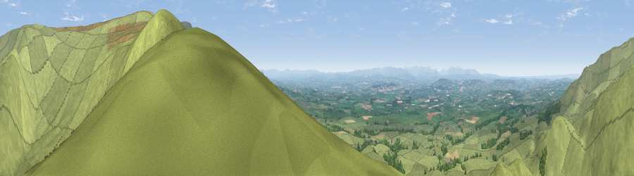

Viewpoint near Ousby
#2158 in England · top 2% of its area beats it · near OusbyWhere it is
The exact computed spot (NY 64538 35500). Click the marker for map links.
The view, rendered

A 360° render of this exact spot computed from the terrain model, tree cover and land cover — summer colours, afternoon light, calibrated against photographs of famous viewpoints. Real trees, hedges and buildings will differ in detail.
The panorama
Grey silhouette: terrain skyline in each direction (720 bearings, Earth curvature and refraction included). Dashed green: skyline with trees (+15 m) and buildings (+8 m) as obstacles. Blue strip: how far the ground is visible on each bearing.
Where the view opens
Wedge length = distance to the farthest visible ground on that bearing (vegetation-aware). Rings at 10, 25 and 50 km.
What fills the view
90% grassland · 5% woodland · 4% cropland
Angular shares of the visible panorama (visual magnitude), not map area. Landscape diversity 0.18 (0–1 Shannon).
Key numbers
More beautiful places nearby
The staircase of upgrades: each row has a higher view potential than everything closer. Driving times are estimates from straight-line distance, calibrated against real road routing — check an actual route before setting out.
| Place | Direction | Drive | Score |
|---|---|---|---|
| Viewpoint near Melmerby | NNE · 3 km | ~6 min | 76.8 |
| Viewpoint near Melmerby | N · 3 km | ~7 min | 78.1 |
| Cross Fell | ESE · 4 km | ~10 min | 78.7 |
| Viewpoint near Plumpton | W · 13 km | ~24 min | 78.9 |
| Barrock Fell | WNW · 21 km | ~36 min | 81.1 |
| Viewpoint near Watermillock | SW · 23 km | ~38 min | 82.6 |
| Viewpoint near Watermillock | SW · 24 km | ~39 min | 83.5 |
| Viewpoint near Legburthwaite | SW · 36 km | ~55 min | 83.8 |
54.71325, -2.55196 · source: screening · position refined by local search. Computed location — check access rights before visiting.